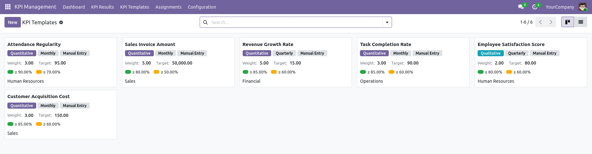
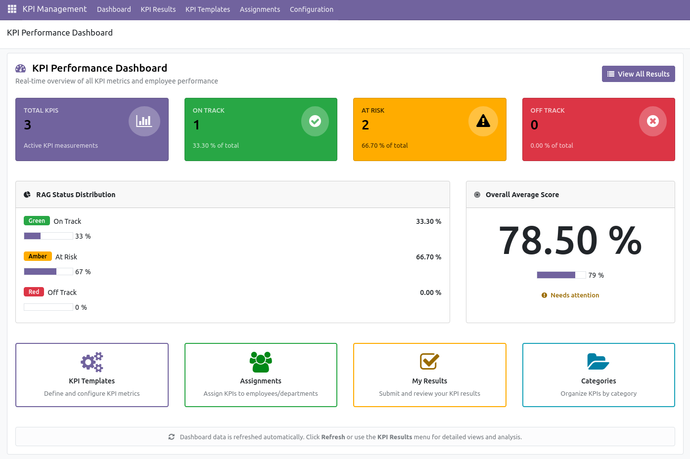
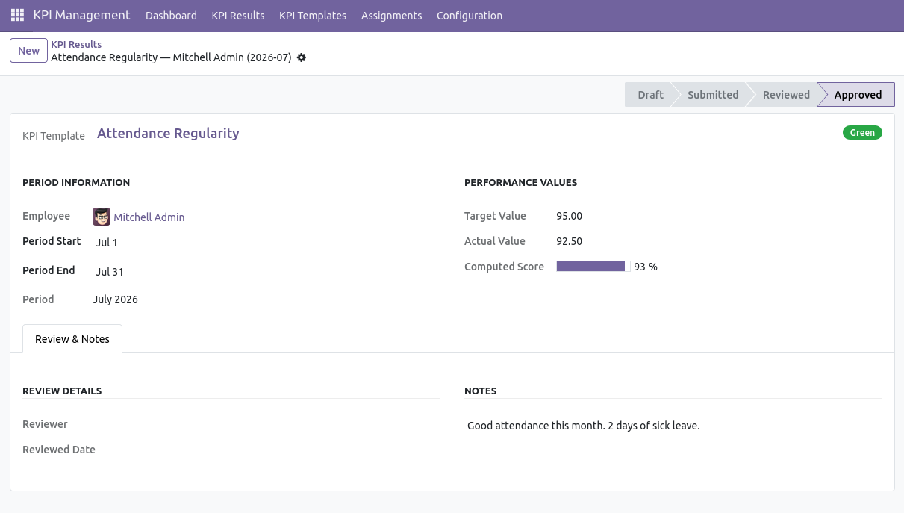

Build a library of KPI templates with quantitative or qualitative types, RAG thresholds and periodicity (monthly, quarterly, yearly).
Distribute KPIs to individual employees or entire departments. State machine: Draft → Active → Expired/Cancelled.
Capture periodic results with an approval workflow and monitor performance on a real-time dashboard.

Real-time overview of all KPI metrics and employee performance.
Organize metrics into hierarchical parent/child trees. Color-coded kanban cards give an at-a-glance view of every category.
Define quantitative or qualitative metrics with RAG thresholds, periodicity, weight and a calculation method.
Assign templates to an individual employee or to an entire department. Department assignments automatically apply to all members.
Track periodic results with a complete approval workflow: Draft → Submitted → Reviewed → Approved, with a Returned state for revision.
Summary cards, RAG distribution and an overall average score gauge, refreshed on every access.
Cross-tab analysis by employee, template, period and RAG status. Built-in trend graphs for score over time.

The system stores the actual value, then derives a 0–100 score from the template's direction (maximize, minimize or hit-a-target) and its min/max bounds, and finally maps the score to a RAG status using the template's thresholds.
| Method | Use case |
|---|---|
| Manual Entry | The employee or manager enters the actual value when submitting the result. |
| Automated (Odoo Data) | The system queries an Odoo model and aggregates a numeric field with an optional domain filter (sum, count or average). |
| Formula | A sandboxed Python expression over the previous period's value, e.g. value * 1.1. |

Two user groups live under the Human Resources application category:
A record rule restricts KPI Users to results they own or results of their subordinates (by employee parent or department manager). Multi-company rules restrict visibility to the user's allowed companies.
Have a feature request, found a bug, or want to contribute? Send a mailto to kpi-management@example.com.
Released under the LGPL-3 license.